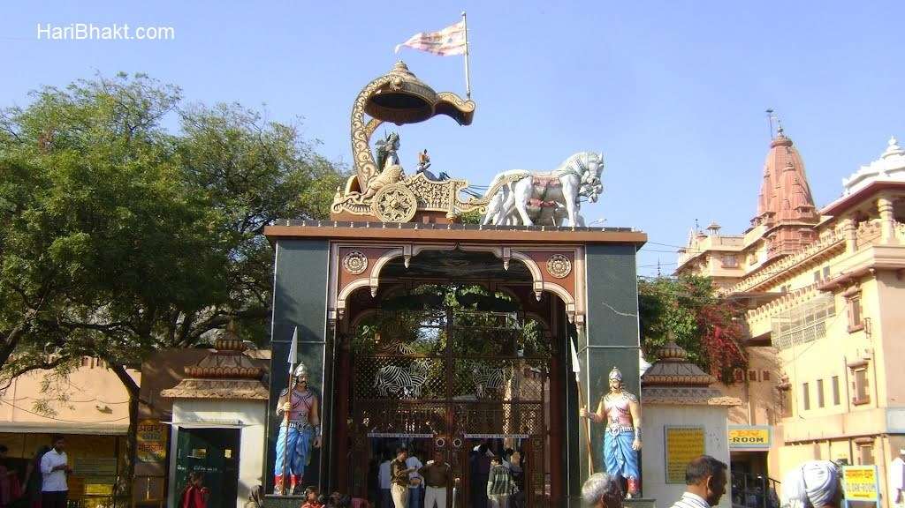

Bhagwan Krishna (भगवान कृष्ण) is the supreme deity of all demigods of all old, recent religions. Bhagwan Krishna is the protector of Sanatan Dharma, the only dharma which has no beginning or end – other religions are man made so have sustainable period of few hundreds years. Bhagwan Krishna is Avatar of Bhagwan Vishnu, worshiped across many traditions and cultures of Sanatan Dharma (Hinduism). After Krishna gave Srimad Bhagwad Gita gyan to Prince Arjun, did the whole world came to know that Krishna is the only supreme God who took Avatar in Dwapar Yug. Initially, this truth was known only to near and dear ones of Bhagwan Krishna.
Any harm done to a family member’s house incite anger in the minds of his well wishers. When so much love is bestowed for selfish human beings, then why the eternal love cannot be conveyed to the most merciful, life giver Bhagwan Krishna. Hindus consider Bhagwan Krishna as one of the members of their family. Some revere him as elder brother, some as their kid, others as their father. Bhagwan Krishna is the most merciful loving God who is happy to have connection with his devotees. So any harm done to his abode is sure to hurt Hindus. Shri Krishna Janmbhoomi is one of the most holiest places for Sanatan Dharmis (Hindus), since it is the birth place of Bhagwan Krishna. It is a prison cell belonging to his mama (maternal Uncle) King Kans where Bhagwan Krishna was born. Shri Krishna Janmbhoomi is temple located in the crowded city of Mathura. Mathura, the birth city of Bhagwan Krishna is situated on the banks of river Yamuna and is approximately 145 km from the capital city Delhi. The town is renowned for being host to the most revered temple of Shri Krishna – the famous Krishna Janma Bhoomi Mandir. Along with neighboring towns Govardhan, Nandgaon and Vrindavan, the area is a major pilgrimage site for the Hindus. The temple is located in the middle of the city mathura. According to historians, the prison cell, popularly known as ‘Garbha Griha’, in the temple premise is the exact place where Bhagwan Krishna was born. The stone walled cell is reminiscent of the cruelty of King Kans. Many statues and sculptures of the bygone era were found on excavating the site. The prison cell was gradually turned into the present beautiful temple. Lakhs of devotees visit the temple during Janmashtami. The festivities and celebrations during the festival is famous all over India. Celebrations begin during mid night with the birth of Bhagwan.